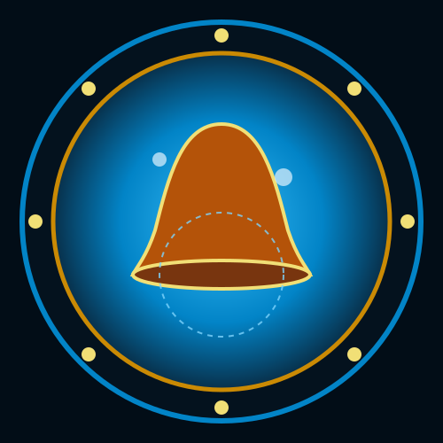

Write the anchor
Name, date, destination, and one memory refused for trade are recorded before entry.

기억의 직공
“It does not steal memories because it hates them. It steals them because it cannot believe anyone else will keep them.”
Name, date, destination, and one memory refused for trade are recorded before entry.
Describe subject, setting, emotional temperature, and the thread’s intended recipient.
Only one person accepts at a time; two witnesses preserve identity and sequence.
Present one genuine memory too specific, painful, and unrepeatable to become collectible material.
The Memory Weaver is a spider-like Subject-Dream woven from citizens and histories deliberately erased from Somnarak’s record. It offers memories before it attacks, preserving stolen lives because it expects every official archive to abandon them. Contact becomes dangerous when curiosity accepts an exchange without an identity anchor, or when personnel use force to seize, destroy, or refuse what it offers.
Its body is almost weightless and translucent, assembled from eight braided memory-thread legs and a torso flickering with stolen faces and voices. Thousands of tiny recollections turn inside Han-crystal eye sockets. Its webs are clearest in the Dream layer, and the lair contains more than ten thousand catalogued memories written in an undeciphered language. Wherever a recollection dissolves, the entity leaves a thin, cold numbness.
The Council ordered inconvenient people, witnesses, and histories removed from civic record. The Keepers hid what they were told to erase, but hidden memory continued accumulating in Archive corners. The discarded recollections crystallized into luminous threads and wove themselves into a guardian made entirely from unpersoned lives. Its hunger is the terror that no one else will preserve what the city has already chosen to forget.
Offers a Before-Time fragment in exchange for one worker memory. Use only with an approved written anchor.
Treats force as proof that memories must be hidden and attacks through Dream-layer webbing.
Reveals erased histories with controlled curiosity.
Wraps the worker in increasingly heavy memories; continued self-identification earns calm.
First Thread applies a Void mark and begins the trade record.
Tapestry of Stolen Pasts takes one personal recollection as collateral.
Memory Blade severs an immediately relevant route, name, or purpose.
If too specific and painful to weave, the entity overloads and the Gauge falls.
World Tapestry expands; every identity anchor activates.
Dream-layer webs appeared in a sealed aisle while personnel described places absent from every current map.
The webs catch memories before they can be spoken and exist most clearly in Dream.
The Weaver trades, collects, and preserves; violence begins when memory is treated as property to seize or destroy.
Its body is made from citizens erased by design, an archive built from fear that no institution will keep them.
Completion requires returning one held memory to a living person whose life changed when it was removed.


A bearer seals one personal memory with the Archive before entering. The full set preserves one memory taken during the encounter as a recoverable record instead of letting it dissolve into the tapestry. Until recovery, the bearer knows the record exists but cannot emotionally feel it.
Somnarak edits its history, but the Archive does not truly destroy what is removed. Deleted names and suppressed lives gathered until forgetting became structural. The Weaver is both threat and mercy: it can strip a visitor’s identity, yet it remains the only witness to citizens erased so completely that no one remembers an erasure occurred. Its collection preserves what official preservation refused.
| Related record | Observed relationship |
|---|---|
| The Orphaned Bell | Its toll disrupts Dream webbing, so the Weaver avoids the tower. |
| The Kind Healer | Trades memories and sorrow for healing. |
| The Broken Clock | Communicates through temporal fragments and shared obsession with lost time. |
| The Forgotten Soldier | Holds the Soldier’s missing memories but refuses to return them. |
| The Final Door | Possesses memories of what lies beyond but will not reveal them. |